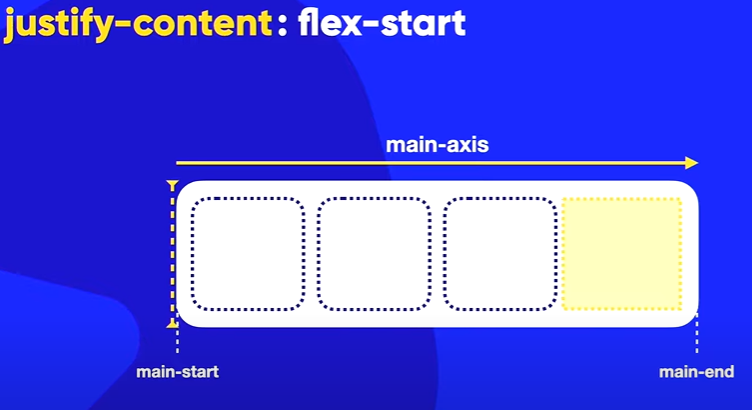

FlexBox
flex-direction
O comando flex-direction informa a direção que os itens serão organizados, esse comando é utilizado no pai e não nos filhos. Por padrão a direção será: row, mas temos outros parametros como:
- row - alinha os itens em linha.
- row-reverse - alinha em linha mas os itens ficam revertido.
- column - alinha os itens em colunas.
- column-reverse - alinha em colunas mas os itens ficam revertido.
Eixos
Para entender um pouco melhor sobre eixos, analise a imagem abaixo.

flex-wrap
O comando flex-wrap defini se o conteúdo vai ficar agrupado ou não, por padrão o parametro será: nowrap, mas temos outros parametros como: wrap que agrupa o conteúdo e wrap-reverse que agrupa o conteúdo e revertea ordem.
Vamos ver alguns exemplos.
nowrap
wrap
wrap-reverse
Flex-flow
É uma junção do flex-direction + flex-wrap. Vamos colocar o primiero comando a direção de pois se vai agrupar ou não.
Podemos substituir:
flex-direction: row;
flex-wrap: nowrap;
Por:
flex-flow: row nowrap;
Justify-Content
Usado para alinhar os intens dentro da direção usada. Por padrão é utilizado o flex-start.
justify-content: flex-start;
Vai iniciar no main start
justify-content: flex-end;
Vai iniciar no main end.
justify-content: center;
Vai centralizar os itens.
justify-content: space-between;
Vai coloar o primeiro elemento no iniciar no main start e o último no main end, depois disso vai distribuir os itens entre os espaços restante.
justify-content: space-evenly;
Não vai grudar o primeiro e o último item nas extremidades, mas vai deixar um espaço igual em todo o container.
justify-content: space-around;
Vai dividir o espaço do container e distribuir entre o número de itens e centralizar cada item na sua porção de espaço.
Space-between, Sapce-Evenly e Space-around
É diferente todos os três e para deixar mais claro, vou inserir uma imagem para melhor aprendizagem.
Justify-Content com Columns
Vamos ver exemplo do justify-content com colunas.
Align items
Usada no Flex pai, ou seja, no container. Vai alinhar os itens no eixo transversal ou cross-axis que é o mesmo. Por padrão o align items aceita o stretch.
Align Items: stretch
Vai esticar os itens para caberem no container.
Align Items: flex-start
Vai grudar os itens no cross start e deixar um espaço para o restante do container.
Align Items: flex-end
Vai grudar os itens no cross end e deixar um espaço para o restante do container.
Align Items: center
Vai centralizar os itens no container.
Align-Content
Usado para alinhar os intens dentro do conteúdo empacotado, so faz sentido usar o align-content quando eu estou usando o wrap ou wrap-reverse. Por padrão é utilizado o stretch.
align-content: stretch;
Vai esticar os itens para caberem no espaço empacotado.
align-content: flex-start;
Vai grudar os itens no cross start e deixar o restante do conteúdo em branco.
align-content: flex-end;
Vai grudar os itens no cross end e deixar o restante do conteúdo em branco.
align-content: center;
Vai centralizar os itens e deixar espaços no cross start e no cross end.
align-content: space-between;
Vai colocar a primeira quebra de linha no cross start e as outras quebras no cross end, depois disso vai deixar espaço no entre as quebras.
align-content: space-evenly;
Não vai grudar o primeiro e o último item nas extremidades, mas vai deixar um espaço igual em todo o container.
align-content: space-around;
Vai dividir o espaço do container e distribuir entre o número quebras e centralizar cada item na sua porção de espaço.
Order
Por padrão o valor de todos os elementos é zero, mas pode ser alterado fazendo com que seja colocado na ordem crescente, item por item nas CSS, só chamar o elemento filho na CSS e atribuir o parametro order:...;
Align-self
O Align-self se aplica somente aos itens, o que possibilita fazer personalização no container e ele vai funcionar no cross-axis, tem 5 valores que são:
align-self: auto;
Vai herdar a caracterisca de alinhamento vertical do seu pai, seja ele o align-content ou align-items.
align-self: flex-start;
É o alinhamento perto do cross start.
align-self: flex-end;
É o alinhamento perto do cross end.
align-self: center;
Que vai calcular o meio entre o cross start. e o cross start. e vai centralizar.
align-self: stretch;
Que vai esticar.
Flex-grow
O flex-grow é utilizado para dimencionar os itens, pode ser uzado no pai, que nesse caso ficariam todos os itens do mesmo tamanho ou pode ser usado separadamente para o filho, basta colocar o comando e adicionar um número.
Obs: É meio estranho pois quando acontece uma quebra de linha o tamanho dos itens ficam desproporcionale quando é usado em um único item e a resolução da tela é mudada, vemos que o valor inserido não é mais obedecido.
Flex
Podemos passa o comando flex como uma porcentagem para os filhos, para decidir o tamanho de cada item, assim podemos fazer personalizar melhor, como no exemploa seguir.